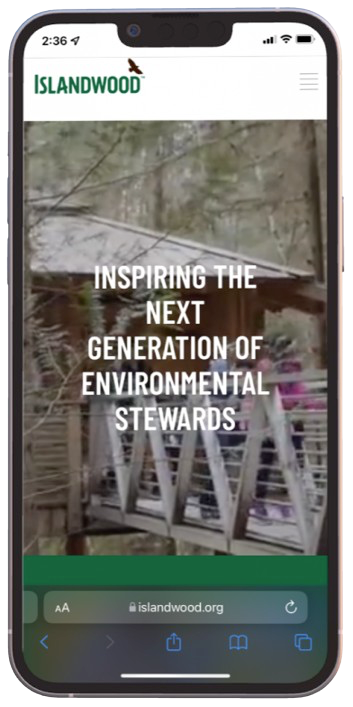
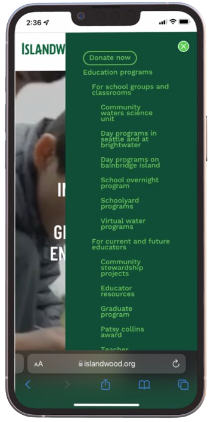
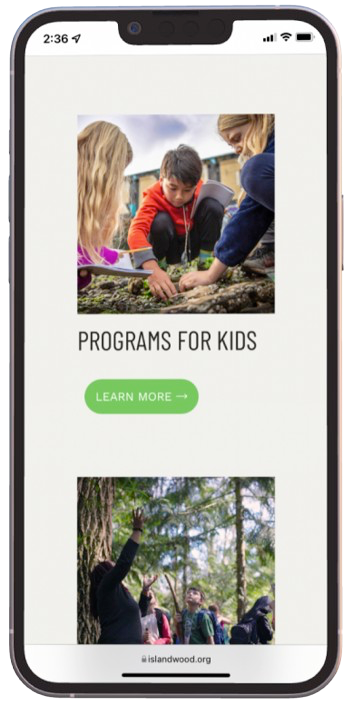
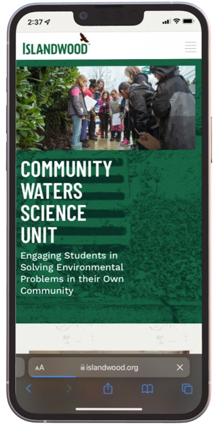
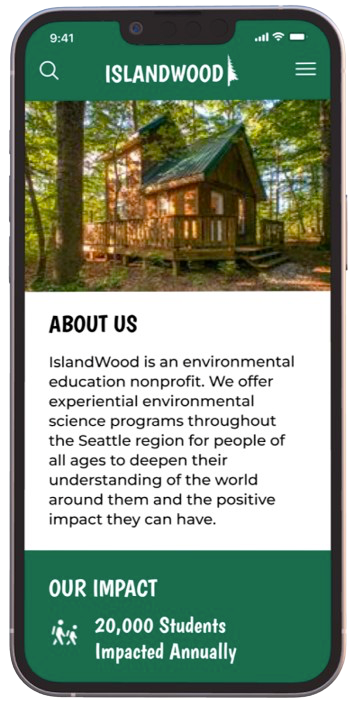
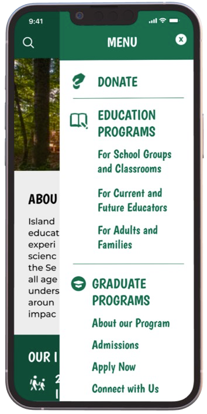
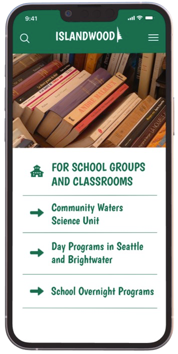
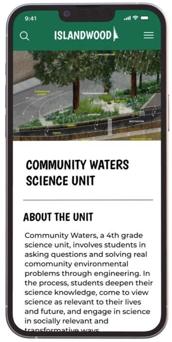

Seamlessly blending adventure and organization. Itinero is about balancing the excitement of exploration with the need for efficient organization.
User Research
I conducted semi-structured interviews with five participants and affinity diagrammed them to categorize user insights into themes.
Affinity Diagram
Based on the findings, I prioritized two key features:
- Itinerary creation and editing
- Personalized recommendations for food and activities
Sketches
I sketched out the interface with pencil and paper to visualize the core features of the app.
Mood Board
I wrote out some words and feelings typically experienced during travel that I wanted to incorporate into my design.
Original Logo
In exploring new logo ideas, I first sketched rough ideas using pencil and paper, trying to involve keywords that capture IslandWood's overall branding and message of connection to nature.
Logo Brainstorm with Pencil and Paper
In crafting the definitive logo for IslandWood, I transitioned from conceptual sketches to a refined, high-fidelity design using Figma.
Redesigned Logo
Low-Fidelity Wireframes
Beginning with initial sketches on paper, I envisioned and outlined four crucial screens—Homepage, Hamburger Menu, Education Programs Page, and Community Waters Science Unit Page—each pivotal in the user journey and experience.
Sketches with Pencil and Paper
Using Figma, I translated these hand-drawn sketches into low-fidelity wireframes.
Homepage
Hamburger Menu
Education Programs
Community Waters Science Unit
High-Fidelity Prototype
Original Mobile Screens
   Redesigned Mobile Screens
   Reflection
This project was a pivotal experience in my design journey, as it was my first time with graphic design and branding. Creating the logo from scratch challenged me to blend IslandWood's mission with natural elements. Through this project, I further developed my skills in visual storytelling and design coherence, teaching me the value of design choices in shaping a brand's identity. It was a rewarding process that deepened my appreciation for the impact of thoughtful design.